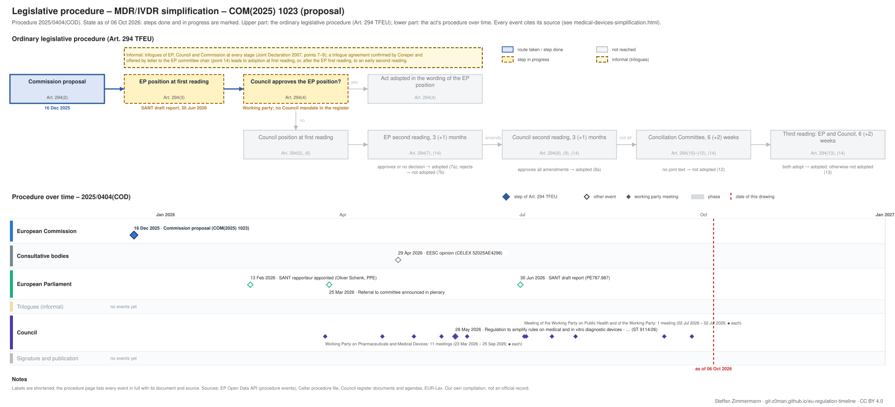

← Regulation timeline › MDR/IVDR simplification › Legislative procedure · All procedures
Procedure 2025/0404(COD), ongoing, as of 06 Oct 2026. Drawing: SVG · PNG · PDF (A3) · draw.io · Page as Markdown: medical-devices-simplification.md
| Stage | EP committee stage |
|---|---|
| Parliament | draft report 30 Jun 2026 |
| Council | working party, latest document 17 Sep 2026 |
| Latest activity | 25 Sep 2026 · Council: Working Party on Pharmaceuticals and Medical Devices: Exchange of views on the second Presidency compromise … (CM 4059/26) |
| Next steps | 14 Dec 2026: Indicative plenary sitting date, 1st reading (EP forecast); EP: amendments and committee vote on the report and mandate; Council: working party towards a negotiating mandate |

| Committee | Role | Rapporteur | Shadow rapporteurs |
|---|---|---|---|
| SANT Public Health | Responsible | Oliver Schenk (EPP), appointed 13 Feb 2026 | Tiemo Wölken (S&D), Laurent Castillo (PfE), Ruggero Razza (ECR), Andreas Glück (Renew), Ignazio Roberto Marino (Greens/EFA), Valentina Palmisano (The Left), Christine Anderson (ESN) |
| IMCO Internal Market and Consumer Protection | Opinion | Maria Guzenina (S&D), appointed 10 Mar 2026 | Henrik Dahl (EPP), Marlena Maląg (ECR), Cynthia Ní Mhurchú (Renew) |
| BUDG Budgets | Budgetary assessment | Hélder Sousa Silva (EPP), appointed 08 Apr 2026 | Nicolae Ștefănuță (Greens/EFA) |
Source: EP Open Data API (participations) and the Legislative Observatory (joint committee, opinions declined); names link to each Member's page on the EP website. The API names no committee for shadow rapporteurs; they are assigned by the EP's order of participants, which groups each committee.
| Date | Actor | Event | Document | Source |
|---|---|---|---|---|
| 2025-12-16 | European Commission | Commission proposal (Art. 294(2) TFEU) | COM(2025) 1023 · en.md de.md | Cellar (CELEX 52025PC1023) |
| 2026-02-13 | European Parliament | SANT rapporteur appointed (Oliver Schenk, PPE) | EP procedure file | EP Open Data API, procedure 2025-0404 (participation RAPPORTEUR) |
| 2026-03-23 | Council | Working Party on Pharmaceuticals and Medical Devices: Examination of cluster 1 of the proposal – scope, UDI … | CM 2027/26 | Council register, CM 2027/26 (notice of meeting and provisional agenda) |
| 2026-03-25 | European Parliament | Referral to committee announced in plenary | EP procedure file | EP Open Data API, procedure 2025-0404 (REFERRAL) |
| 2026-04-21 | Council | Working Party on Pharmaceuticals and Medical Devices: Examination of cluster 2 of the proposal – Support to … | CM 2298/26 | Council register, CM 2298/26 (notice of meeting and provisional agenda) |
| 2026-04-29 | Consultative bodies | EESC opinion | CELEX 52025AE4298 | Cellar procedure file 2025/404 |
| 2026-05-07 | Council | Working Party on Pharmaceuticals and Medical Devices: Examination of cluster 3 of the proposal – notified … | CM 2622/26 | Council register, CM 2622/26 (notice of meeting and provisional agenda) |
| 2026-05-21 | Council | Working Party on Pharmaceuticals and Medical Devices: Examination of cluster 4 of the proposal – Post-market … | CM 2822/26 | Council register, CM 2822/26 (notice of meeting and provisional agenda) |
| 2026-05-28 | Council | Regulation to simplify rules on medical and in vitro diagnostic devices - Progress report | ST 9114/26 · en.md | Cellar procedure file 2025/404 (Council register) |
| 2026-05-28 | Council | Working Party on Pharmaceuticals and Medical Devices: Examination of cluster 5 of the proposal – Placing on … | CM 2909/26 | Council register, CM 2909/26 (notice of meeting and provisional agenda) |
| 2026-06-03 | Council | Working Party on Pharmaceuticals and Medical Devices: Examination of cluster 6 of the proposal – Interplay … | CM 3008/26 REV 1 | Council register, CM 3008/26 REV 1 (notice of meeting and provisional agenda) |
| 2026-06-30 | European Parliament | SANT draft report | PE787.987 · en.md de.md | EP Open Data API, procedure 2025-0404 (COMMITTEE_TABLING_REPORT) |
| 2026-07-02 | Council | Meeting of the Working Party on Public Health and of the Working Party: 2. Presentation of the Presidency … | CM 3277/26 | Council register, CM 3277/26 (notice of meeting and provisional agenda) |
| 2026-07-03 | Council | Working Party on Pharmaceuticals and Medical Devices: cluster 2 – Exchange of views (document to be … | CM 3278/26 | Council register, CM 3278/26 (notice of meeting and provisional agenda) |
| 2026-07-16 | Council | Working Party on Pharmaceuticals and Medical Devices: cluster 3 and 4 – Exchange of views = Block 1 – … | CM 3481/26 | Council register, CM 3481/26 (notice of meeting and provisional agenda) |
| 2026-07-28 | Council | Working Party on Pharmaceuticals and Medical Devices: Exchange of views = Clusters 3 and 4, Block 3 – … | CM 3725/26 | Council register, CM 3725/26 (notice of meeting and provisional agenda) |
| 2026-09-11 | Council | Working Party on Pharmaceuticals and Medical Devices: Exchange of views on the first Presidency compromise … | CM 3836/26 REV 1 | Council register, CM 3836/26 REV 1 (notice of meeting and provisional agenda) |
| 2026-09-25 | Council | Working Party on Pharmaceuticals and Medical Devices: Exchange of views on the second Presidency compromise … | CM 4059/26 | Council register, CM 4059/26 (notice of meeting and provisional agenda) |
Every document the Council register, the EU database of the Parliament of Austria or the EP lists for the procedure, with its state: public documents link to the official file; documents that are not public link to their entry in the Austrian database where there is one (metadata only). Status: public; not public; not public, leak available (an unofficial copy is known to circulate outside the institutions; it is neither published nor quoted here). Released: when a document listed as not public was released, by the date of the Council's public PDF (a technical date) or else the day our daily check found it public.
| Date | Document | Kind | Subject | Status | Released | Text |
|---|---|---|---|---|---|---|
| 2026-01-07 | WK 74/26 | council-note | Consolidated version of proposed amendments to the MDR Regulation (Articles) | not public* | – | – |
| 2026-01-07 | WK 79/26 | council-note | Consolidated version of proposed amendments to the IVDR Regulation (Articles) | public | – | – |
| 2026-01-12 | WK 341/26 | council-note | Flash from the Presidency for the Working Party on Pharmaceuticals and Medical Devices on 14 January 2026 | public | – | – |
| 2026-01-14 | WK 345/26 | council-note | Presentation by the Commission on the Regulation to simplify rules on medical and in vitro diagnostic devices | not public* | – | – |
| 2026-02-09 | ST 6148/26 | council-note | Attendance of a third party at the Working Party on Pharmaceuticals and Medical Devices on 13 February 2026 - Approval | not public* | – | – |
| 2026-02-13 | WK 2385/26 | council-note | Commission presentation on Staff Working Documents on the Targeted Evaluation and on Cost Savings | not public* | – | – |
| 2026-03-09 | WK 3284/26 | council-note | Presidency Flash for the Meeting of the Working Party on Pharmaceuticals and Medical Devices on 12 March 2026 | not public* | – | – |
| 2026-03-12 | WK 3870/26 | council-note | Planning and sequence of topics for the examination of the proposal | public | – | – |
| 2026-03-12 | WK 3916/26 | council-note | Presentation by the Commission | public | – | – |
| 2026-03-13 | ST 7161/26 | council-note | cluster 1 | public | – | – |
| 2026-03-18 | ST 16919/25 | council-note | Vorschlag für eine VERORDNUNG DES EUROPÄISCHEN PARLAMENTS UND DES RATES zur Änderung der Verordnungen (EU) 2017/745 und (EU) 2017/746 zwecks Vereinfachung der … | public | – | – |
| 2026-03-19 | WK 4250/26 | council-note | Meeting of the Working Party on Pharmaceuticals and Medical Devices - Flash from the Presidency | not public* | – | – |
| 2026-03-23 | WK 4453/26 | council-note | Commission presentation | public | – | – |
| 2026-03-30 | ST 7252/26 | council-note | cluster 2 | not public* | – | – |
| 2026-04-14 | WK 4919/26 | council-note | Meeting of the Working Party on Pharmaceuticals and Medical Devices - Flash from the Presidency | not public* | – | – |
| 2026-04-17 | WK 5516/26 | council-note | Comments from Austria and other Member States | public | – | – |
| 2026-04-21 | WK 5589/26 | council-note | Regulation to simplify rules on medical and in vitro diagnostic devices - Commission presentation on cluster 2 - Support to the regulatory system | public | – | – |
| 2026-04-27 | ST 7253/26 | council-note | cluster 3 | public | – | – |
| 2026-04-29 | CELEX 52025AE4298 | opinion | Opinion of the European Economic and Social Committee – Proposal of the European Parliament and of the Council amending Regulations (EU) 2017/745 and (EU) … | public | – | – |
| 2026-04-30 | WK 6200/26 | council-note | Meeting of the Working Party on Pharmaceuticals and Medical Devices - Flash from the Presidency | not public* | – | – |
| 2026-05-04 | ST 8808/26 | council-note | Opinion on the application of the Principles of Subsidiarity and Proportionality - Cover note from the Italian Chamber of Deputies | not public* | – | – |
| 2026-05-06 | WK 6461/26 | council-note | Comments from Austria and other Member States on Cluster 2 | public | – | – |
| 2026-05-07 | WK 6502/26 | council-note | Regulation to simplify rules on medical and in vitro diagnostic devices - Commission presentation on cluster 3 - Notified bodies, classification and conformity … | public | – | – |
| 2026-05-12 | ST 7254/26 | council-note | cluster 4 | not public* | – | – |
| 2026-05-18 | WK 6846/26 | council-note | Meeting of the Working Party on Pharmaceuticals and Medical Devices - Flash from the Presidency | public | – | – |
| 2026-05-19 | ST 9402/26 | council-note | Opinion of the European Economic and Social Committee (EESC) | public | – | – |
| 2026-05-19 | ST 9417/26 | council-note | Reasoned opinion on the application of the Principles of Subsidiarity and Proportionality - Cover note from the French Senate | not public* | – | – |
| 2026-05-21 | ST 7255/26 | council-note | cluster 5 | not public* | – | – |
| 2026-05-21 | WK 7154/26 | council-note | Regulation to simplify rules on medical and in vitro diagnostic devices - Commission presentation on cluster 4 - Post-market surveillance, vigilance and … | public | – | – |
| 2026-05-22 | WK 7258/26 | council-note | Comments from delegations on cluster 3 | public | – | – |
| 2026-05-22 | WK 7286/26 | council-note | Non-paper by Austria and other Member States on cybersecurity of medical devices | not public* | – | – |
| 2026-05-26 | WK 7379/26 | council-note | Meeting of the Working Party on Pharmaceuticals and Medical Devices - Flash from the Presidency | not public* | – | – |
| 2026-05-28 | ST 7256/26 | council-note | cluster 6 | not public* | – | – |
| 2026-05-28 | ST 9114/26 | council-progress-report | Regulation to simplify rules on medical and in vitro diagnostic devices - Progress report | public | – | en |
| 2026-05-28 | WK 7594/26 | council-note | Regulation to simplify rules on medical and in vitro diagnostic devices - Commission presentation on cluster 5 - Placing on the market and market surveillance | not public* | – | – |
| 2026-05-29 | WK 7668/26 | council-note | Meeting of the Working Party on Pharmaceuticals and Medical Devices - Flash from the Presidency | not public* | – | – |
| 2026-06-03 | WK 7872/26 | council-note | Regulation to simplify rules on medical and in vitro diagnostic devices - Commission presentation on cluster 6 - Interplay with the AI Act, dedicated … | public | – | – |
| 2026-06-10 | WK 8221/26 | council-note | Comments from Member States on cluster 4 | public | – | – |
| 2026-06-12 | ST 9801/26 | council-note | Verordnung zur Vereinfachung der Vorschriften über Medizinprodukte und In-vitro-Diagnostika – Fortschrittsbericht | public | – | – |
| 2026-06-19 | ST 10284/26 | council-note | Exchange of views | public | – | – |
| 2026-06-19 | ST 10876/26 | council-note | Opinion on the application of the Principles of Subsidiarity and Proportionality - Cover note from the Italian Senate | not public* | – | – |
| 2026-06-19 | WK 8980/26 | council-note | Comments from Austria and other Member States on cluster 5 | public | – | – |
| 2026-06-24 | ST 10506/26 | council-note | Exchange of views | public | – | – |
| 2026-06-24 | ST 11046/26 | council-note | Opinion on the application of the Principles of Subsidiarity and Proportionality - Cover note from the Italian Senate | not public* | – | – |
| 2026-06-25 | WK 9297/26 | council-note | Meeting of the Working Party on Public Health and Working Party on Pharmaceuticals and Medical Devices - Flash from the Presidency | not public* | – | – |
| 2026-06-26 | WK 9147/26 | council-note | Comments from Austria and other Member States on cluster 6 | public | – | – |
| 2026-06-30 | PE787.987 | ep-draft-report | DRAFT REPORT on the proposal for a Regulation of the European Parliament and of the Council amending Regulations (EU) 2017/745 and (EU) 2017/746 as regards … | public | – | en de |
| 2026-07-02 | WK 9801/26 | council-note | Meeting of the Working Party on Pharmaceuticals and Medical Devices - Presentation by the Presidency | public | – | – |
| 2026-07-08 | ST 11243/26 | council-note | Exchange of views | not public* | – | – |
| 2026-07-08 | ST 11244/26 | council-note | Exchange of views | not public* | – | – |
| 2026-07-09 | ST 11546/26 | council-note | Exchange of views | not public* | – | – |
| 2026-07-10 | ST 11549/26 | council-note | Exchange of views | not public* | – | – |
| 2026-07-13 | WK 10415/26 | council-note | Meeting of the Working Party on Pharmaceuticals and Medical Devices - Flash from the Presidency | not public* | – | – |
| 2026-07-16 | WK 10612/26 | council-note | Meeting of the Working Party on Pharmaceuticals and Medical Devices - Presentation by the Presidency | public | – | – |
| 2026-07-22 | ST 11961/26 | council-note | Exchange of views | not public* | – | – |
| 2026-07-22 | WK 10843/26 | council-note | Meeting of the Working Party on Pharmaceuticals and Medical Devices - Flash from the Presidency | not public* | – | – |
| 2026-07-28 | PE791.887 | ep-amendments | public status unknown | – | – | |
| 2026-07-28 | PE791.890 | ep-amendments | public status unknown | – | – | |
| 2026-07-28 | PE791.891 | ep-amendments | public status unknown | – | – | |
| 2026-07-28 | WK 10875/26 | council-note | Meeting of the Working Party on Pharmaceuticals and Medical Devices - Presentation by the Presidency | public | – | – |
| 2026-07-28 | WK 10875/26 ADD 1 | council-note | Meeting of the Working Party on Pharmaceuticals and Medical Devices - Presentation by the Presidency | not public* | – | – |
| 2026-07-29 | WK 11067/26 | council-note | Presentation by Germany | public | – | – |
| 2026-08-28 | ST 12272/26 | council-note | Exchange of views | not public* | – | – |
| 2026-08-31 | ST 12273/26 | council-note | Exchange of views | not public* | – | – |
| 2026-09-02 | ST 12287/26 | council-note | Exchange of views | not public* | – | – |
| 2026-09-03 | WK 11070/26 | council-note | Meeting of the Working Party on Pharmaceuticals and Medical Devices - Flash from the Presidency | not public* | – | – |
| 2026-09-07 | WK 13494/26 | council-note | Regulation to simplify rules on medical and in vitro diagnostic devices - Technical input from the Commission’s services on the envisaged functioning of … | not public* | – | – |
| 2026-09-16 | ST 12698/26 | council-note | Exchange of views | not public* | – | – |
| 2026-09-17 | WK 14267/26 | council-note | Meeting of the Working Party on Pharmaceuticals and Medical Devices - Flash from the Presidency | not public* | – | – |
* Not public: the registers are checked again daily until the document is released; last check 2026-10-08.
Unofficial Markdown conversions for reading, searching and project folders; only the official document is authentic. "Read" opens the rendered text on GitHub, where a link to a provision (#art-13, #rec-12, #annex-i) jumps to it.